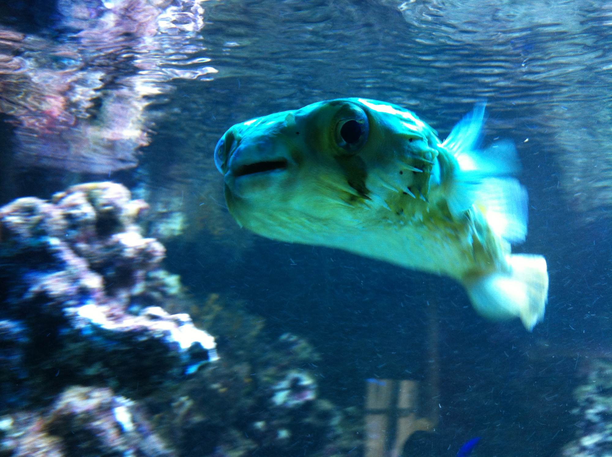
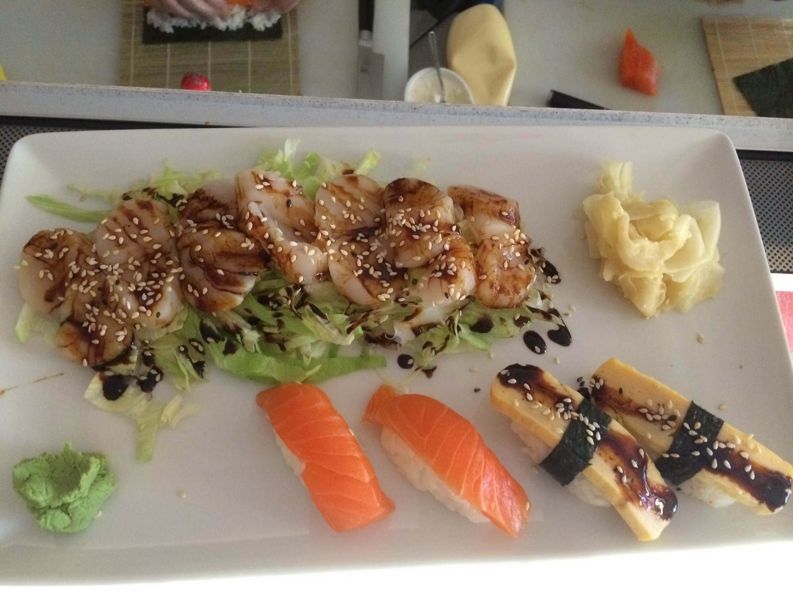
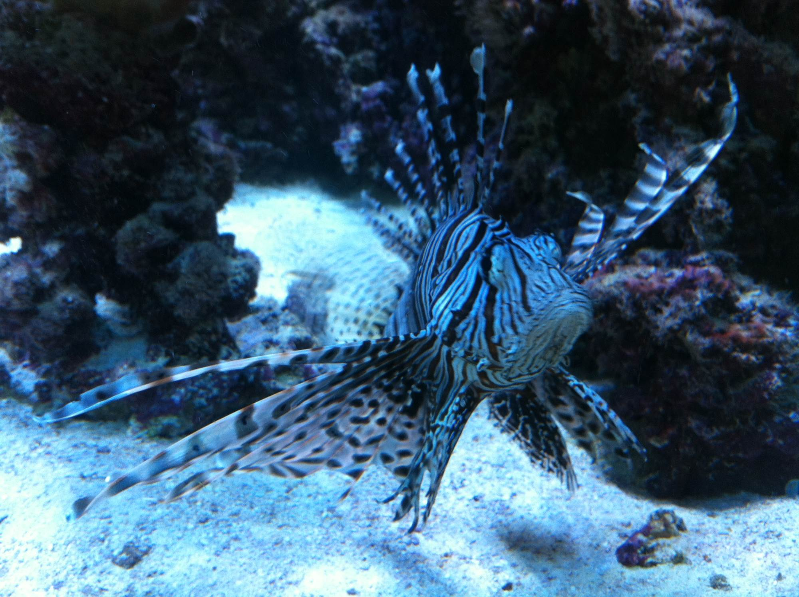

Sy Charlottenburg
Kantstraße 54
10625 Berlin
Mo – So11:00 – 24:00
Küche11:30 – 23:30
Offene Küche, Salzwasseraquarien und im Sommer eine Terrasse — in Charlottenburg, Spandau und Schönwalde-Glien.



Kantstraße 54
10625 Berlin
Breite Straße 33
13597 Berlin
Hotel Diana, Berliner Allee 16
14621 Schönwalde-Glien